Adobe Spark
Getting started
Adobe Spark has features of Adobe Illustrator, but packages it in a way that is easy to use for people without any design knowledge. The program allows you to create graphics and even short videos, and makes suggestions for designs.
Spark is free to use but has many options that are only available through the paid subscription. Spark is also included in Adobe Creative Cloud. Nonetheless, it makes creating visuals very easy and still offers enough free to use options
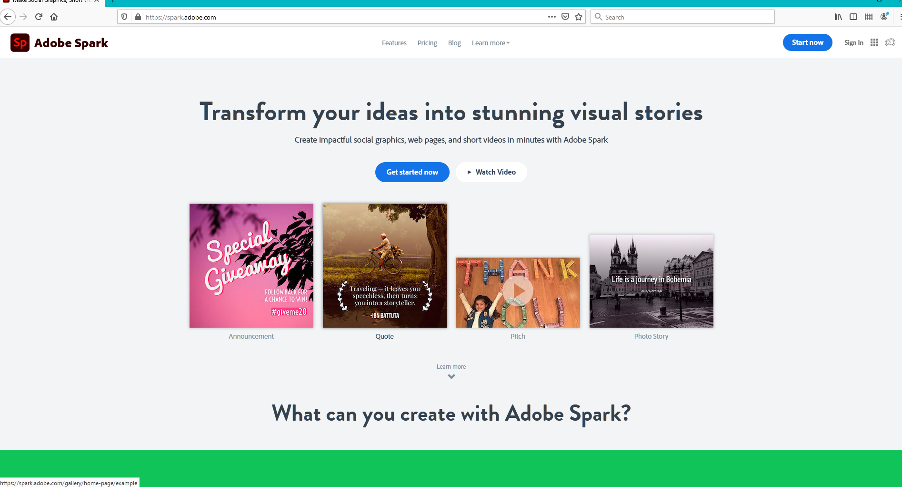When you you sign up you have the option to create a new Adobe account or use an exisitng google, Facebook or Apple account.
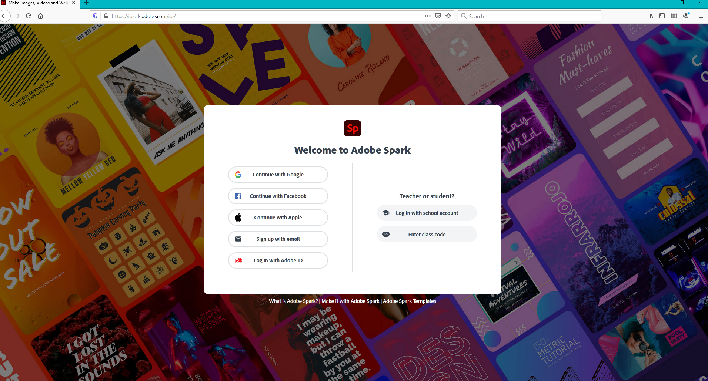As you can see, Spark already has options from which you can pick to create your visuals. Clicking on the plus sign to the left gives you even more options such as a designing a web page or a flyer.
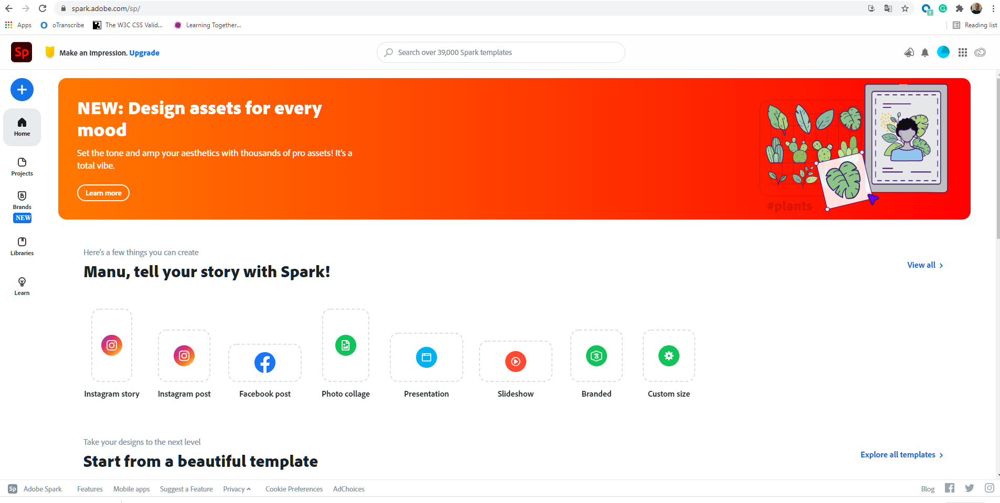You can also choose a custom size in case you want to design postcards, or other specific sized images or videos.
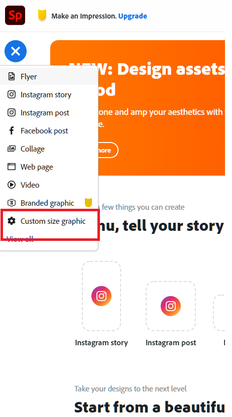When you have chosen the size and format of your post it will also give you options for templates, which you will then be able to edit to your ideas, or you can simply create one from scratch. The yellow mark on the templates means that it is premium content. You will also find that with other features in Spark and can easily tell whether it is available to you.
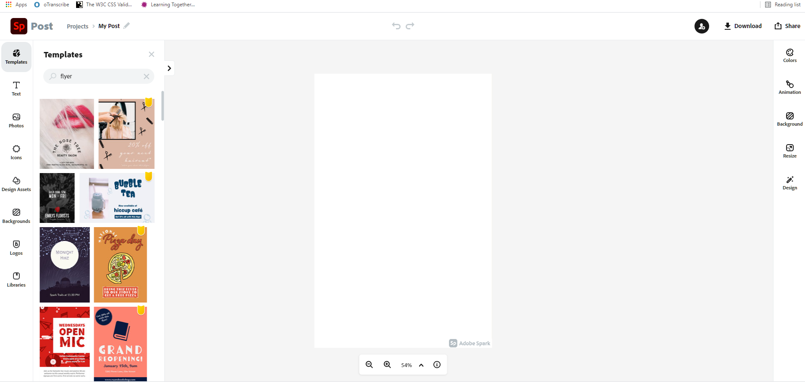I chose a preexisting template to play with, but as you can see to the left there are options for backgrounds, photos which lets you upload your own images, text, and design assets to create your flyer from scratch. However, even with a template you can change the colors. The two crossing arrows will invert the colors and mix everything up. The three bars let you choose custom colors.
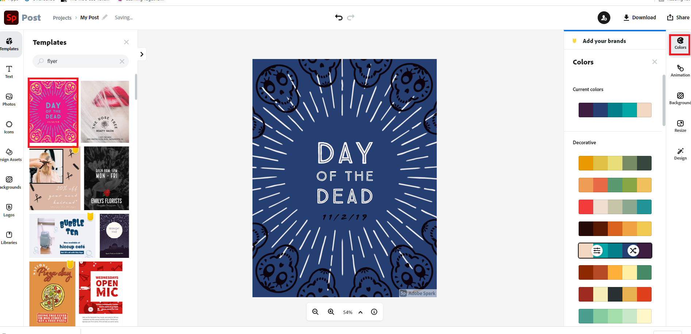 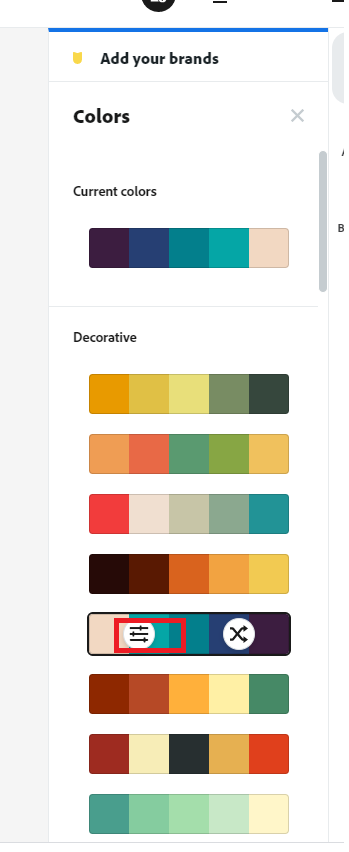 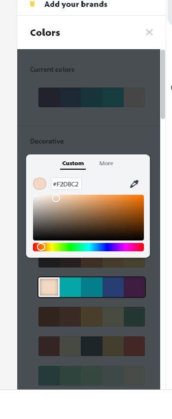You can remove the watermark by clicking on it and it will ask you if you want to remove it once. When you click on that it will redirect you to the subscription page, but when you close that page your project will have the mark removed, without subscribing to Spark
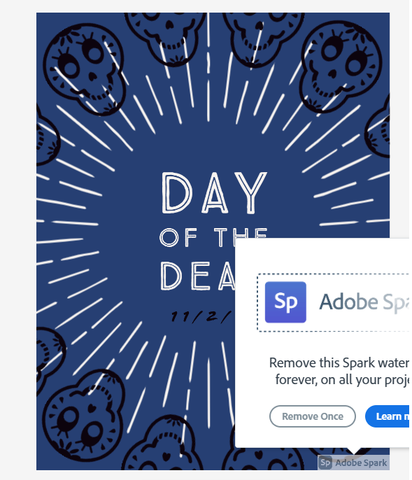Double click on the text field to get options, the same can be used for other elements on the page to edit them. As you can see in the image, you can change the font, size, opacity, shape, add shadows and outline, the little wand also offers for you to find a new style.
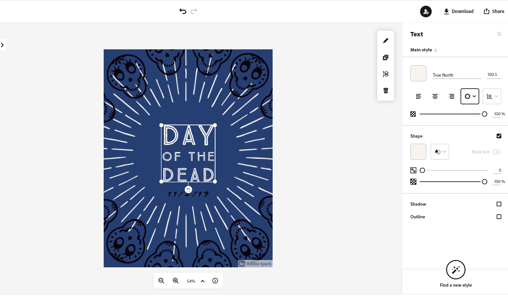The tools in the red box allow you to either edit the text, duplicate the text with the plus sign, or move the text to a different layer. That feature is also helpful for images, as you can see on our template the white lines are on the layer behind the skulls.
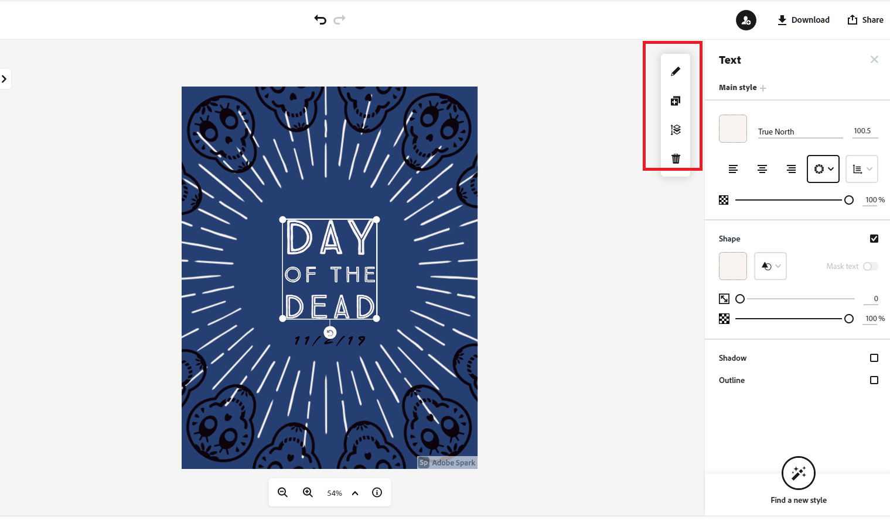When you are finished with designing, you can export your files as PNG, JPG, or PDF. Unfortunately it will only let you share your work via Spark with other people when you pay for the subscription, however, if you just want to embed your visual within a Wordpress site, or use it for a social media post, PNG and JPG is all you need.
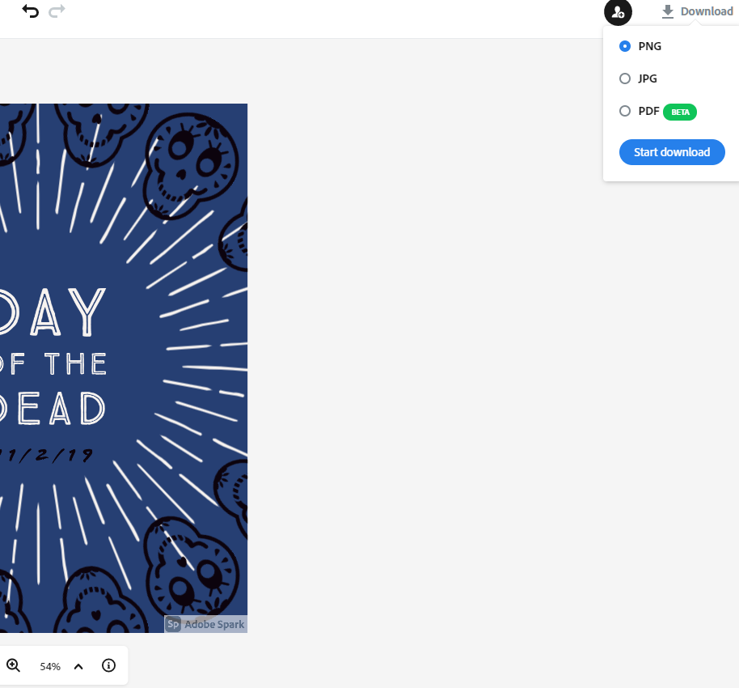